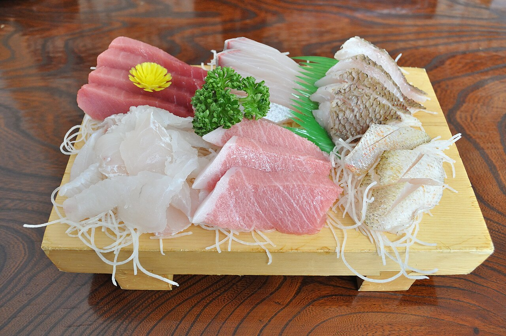
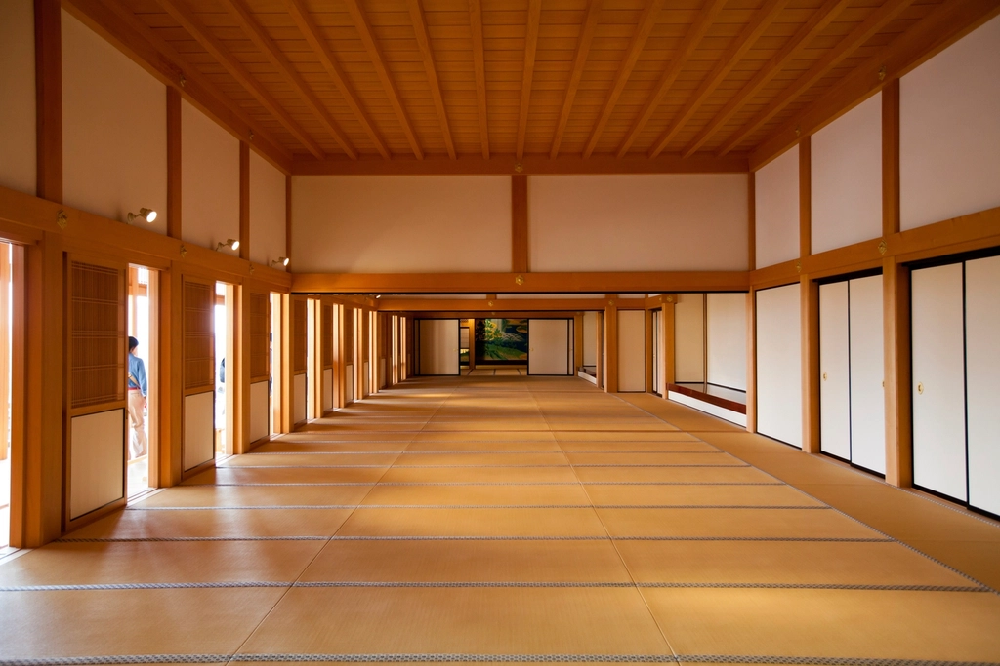
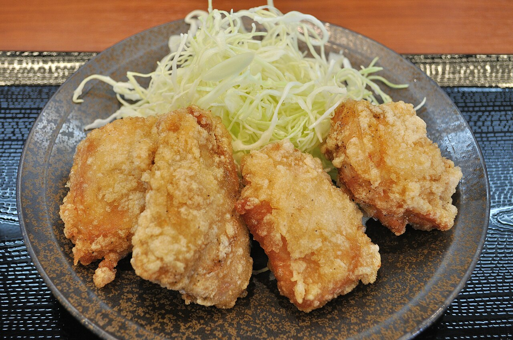
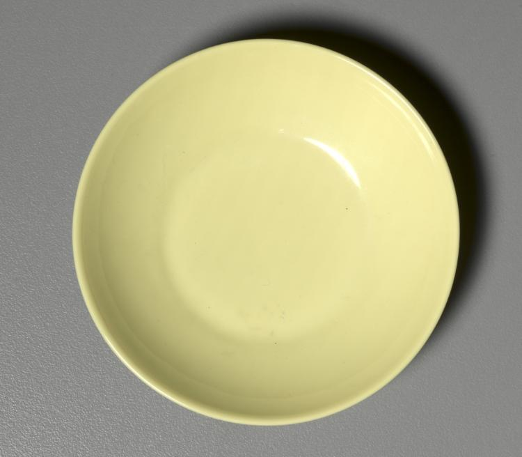
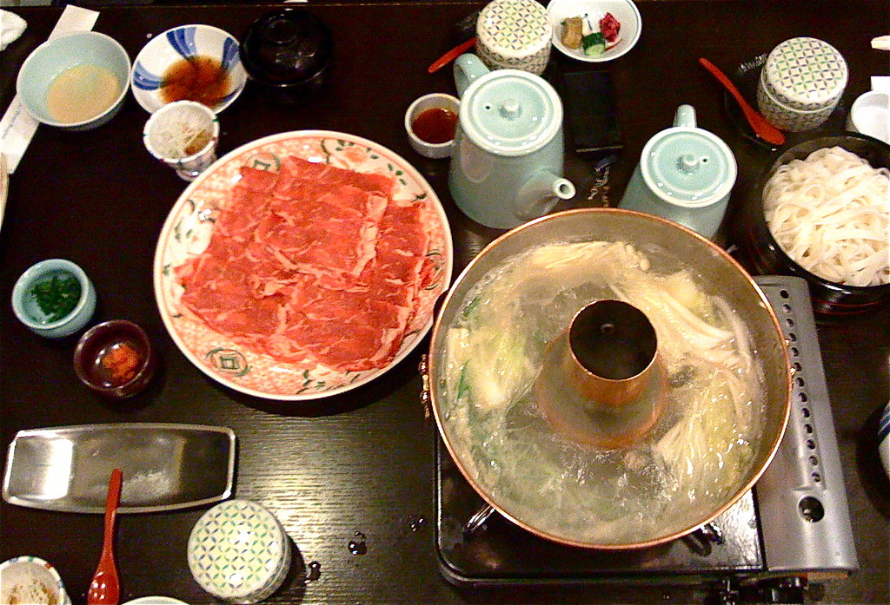
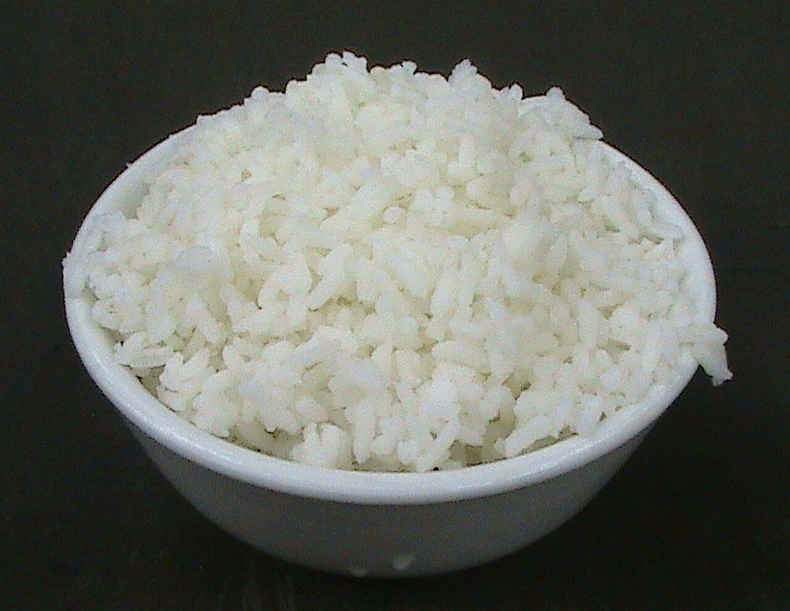
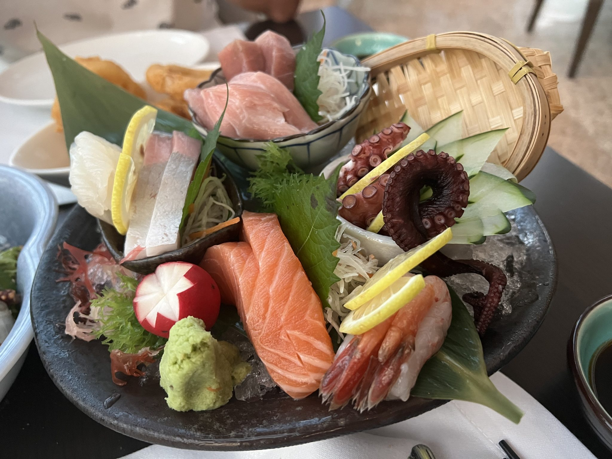
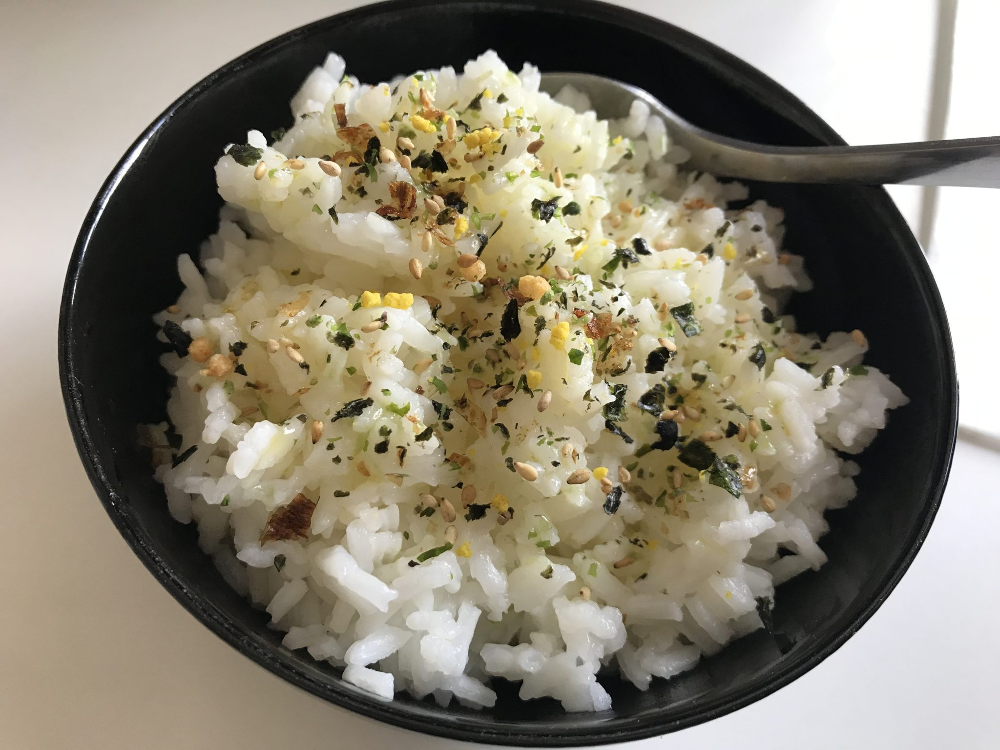
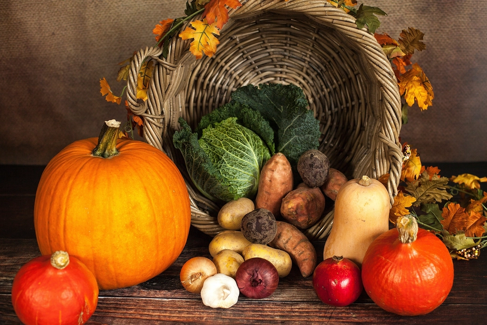
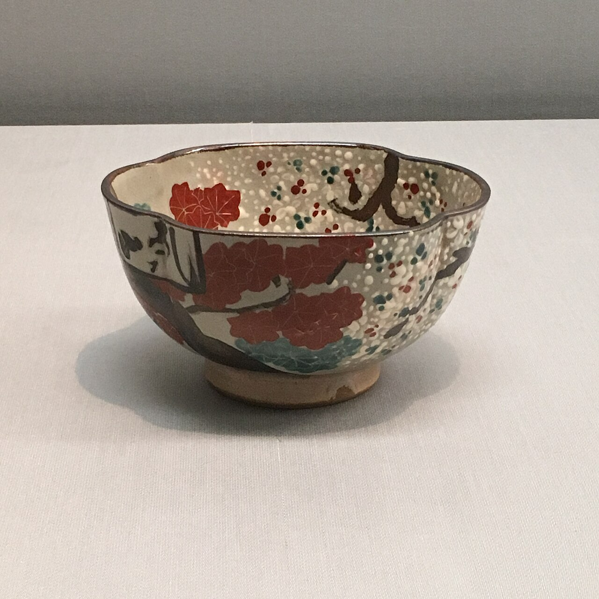

ふぐ刺し(てっさ)
薄く引いた身を、白磁の器の上で。ふぐ本来の淡い旨みを、まずは一枚から。
価格【プレースホルダー・要確認】
千葉県我孫子市 季節料理すゞき ― ふぐ料理と四季の恵みを、地元で長く。
手賀沼と利根川、二つの水辺に抱かれたまち・我孫子。この地でふぐ料理をお出しするお店は、 実はそう多くありません。あるお客様から「我孫子にはこの様なお店が無いので」というお言葉 をいただいたことがありますが、季節料理すゞきは、そんな我孫子で数少ないふぐ料理のお店と して、長くのれんを守ってまいりました。
ふぐといえば冬、という印象をお持ちの方も多いかもしれません。けれど季節料理すゞきでは、 夏にも「夏河豚」としてふぐをお楽しみいただけます(提供時期は仕入れにより変動するため 【要確認】)。一年のうち味わえる時季が限られているようで、実は通年、丁寧にふぐと向き合っ てきた一軒です。
創業から20年以上。赤ちゃんだった頃から通ってくださっているというお客様がいらっしゃる ほど、地域の暮らしに寄り添いながら営んでまいりました。暖簾をくぐる前のその佇まいに 「興味惹かれる」と声をかけてくださる方もいます。派手さよりも、静かに積み重ねてきた時間 を、まずは店構えから感じていただけたら幸いです。

薄く引いたふぐ刺しに始まり、香ばしい唐揚げ、発酵の旨みをまとわせた醤油麹、出汁の効いた 鍋、そして〆の雑炊まで――一皿ずつ表情を変えながら、ふぐを味わい尽くしていただける献立 です。あるお客様からは「ふぐ刺し、唐揚げ、醤油麹、鍋、雑炊まで美味しくいただき、お腹 いっぱいになりました」というお声もいただきました。

薄く引いた身を、白磁の器の上で。ふぐ本来の淡い旨みを、まずは一枚から。
価格【プレースホルダー・要確認】

カラッと揚げた衣の中に、ふぐならではの弾む食感。
価格【プレースホルダー・要確認】

発酵の旨みをまとわせた、すゞきならではの一品。
価格【プレースホルダー・要確認】

出汁まで余さず味わう、鍋仕立ての一皿(通年提供かどうかは【要確認】)。
価格【プレースホルダー・要確認】

鍋の〆に、旨みの染みたひと椀を。
価格【プレースホルダー・要確認】
お会計の目安について、あるお客様からは「お酒を飲んでも7000円位で済み、安くて驚く
くらいだった」というお声をいただいています。
※あくまで一人のお客様のご感想であり、正式な料金表ではございません。詳しいお会計の
目安は、お電話にてお問い合わせください。
ふぐだけでなく、季節ごとに表情を変える一皿もすゞきの持ち味です。あるお客様からは 「刺し身が美味しい」「炊き込みご飯を出していただきました」というお声もいただいています。

その時季の魚介を、彩りよく盛り合わせて。
一年を通じて季節の魚介をお楽しみいただけます
価格【プレースホルダー・要確認】

季節の食材を炊き込んだ、常連のお客様にも評判の一品。
一年を通じて季節の食材をお楽しみいただけます
価格【プレースホルダー・要確認】

その時期ならではの食材を使った料理をご用意しています。内容は仕入れによって変わりますので、詳しくは店主までお尋ねください。
一年を通じて季節の一品をお楽しみいただけます
価格【プレースホルダー・要確認】
※3項目とも価格は全て【プレースホルダー・要確認】です。
冬だけでなく夏河豚まで扱う、通年の実力店です。
ふぐの旨みを余すことなく味わえる献立をご用意しています。
常連のお客様が子どもの頃から通ってくださる、地元に根差した一軒です。
ふぐ以外にも、刺身や炊き込みご飯など季節の味をお楽しみいただけます。


夏河豚が美味しいと伺って、家族で久しぶりに参りました。我孫子にはこのようなお店が無いので、どうぞお元気で続けていただきたいです。
美味しいふぐ料理を楽しめます。値段の割に量も多く、お酒を飲んでも7000円位で済み、安くて驚くくらいでした。
※価格は一人のお客様のご感想であり、料金表ではありません。
ふぐ刺し、唐揚げ、醤油麹、鍋、雑炊まで美味しくいただき、お腹いっぱいになりました。
20年間、赤ちゃんの頃からお世話になっているお店です。刺し身が美味しく、炊き込みご飯もとても美味しいです。
興味惹かれる佇まい。
季節料理すゞきは、千葉県我孫子市寿二丁目にございます。営業時間・定休日・駐車場・ご予約 についての詳細は現在確認中のため、下記の情報とあわせて、まずはお電話にてお気軽にお問い 合わせください。
| 店名 | 季節料理すゞき |
|---|---|
| 住所 | 千葉県我孫子市寿２丁目９−２６ |
| 電話 | 04-7184-1388 |
| 営業時間 | 【要確認】 |
| 定休日 | 【要確認】 |
| 駐車場 | 【要確認】 |
| ご予約 | ご予約・お問い合わせはお電話にて承ります(オンライン予約の可否は【要確認】) |
まずはお電話でお気軽にどうぞ
04-7184-1388一部の写真はフリー素材のイメージです。実際の店内・お料理写真は貴店ご提供のものに差し替えます